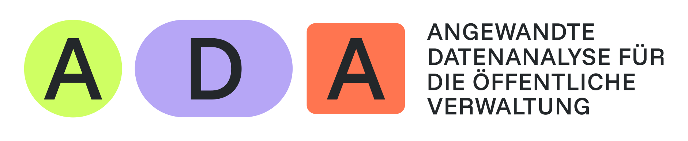
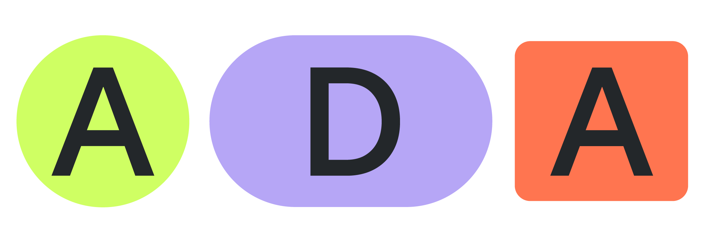

Technische Stack-Optionen mit Fokus auf Datenschutz und Deployment

| Kriterium | Option 1: HTML/JS | Option 2: Quarto/webR |
|---|---|---|
| Komplexität | Minimal | Mittel |
| Flexibilität | Sehr hoch | Hoch |
| R-Integration | ❌ | ✅ |
| Vorlagen | Manuell | Viele verfügbar |
| Datenverarbeitung | Client-Side | Client-Side |
// Beispiel: Client-Side Datenverarbeitung
class DataProcessor {
constructor() {
this.data = null;
}
async processFile(file) {
// Alle Daten bleiben im Browser
const reader = new FileReader();
reader.onload = (e) => {
this.data = this.analyze(e.target.result);
this.generateReport();
};
reader.readAsText(file);
}
}Datenschutz-Vorteil
Keine Server-Übertragung - alle Daten bleiben lokal!
# webR läuft vollständig im Browser
library(webr)
# Beispiel: Datenanalyse
analyze_data <- function(data) {
summary_stats <- summary(data)
plot(data$variable1, data$variable2)
return(list(
statistics = summary_stats,
correlations = cor(data)
))
}WebAssembly
R-Code wird zu WASM kompiliert und läuft client-side im Browser!
🔒 Kernprinzip: Daten verlassen niemals das Gerät
Beide Optionen gewährleisten:
| Anforderung | Umsetzung |
|---|---|
| Datensparsamkeit | Nur lokale Verarbeitung |
| Zweckbindung | Klare Analyse-Funktionen |
| Transparenz | Open-Source Code |
| Integrität | Keine externen Requests |
| Betroffenenrechte | Volle Kontrolle liegt bei Sachbearbeitenden / Personalabteilung |
# Mit Vite.js
npm run build
# Ergebnis: Statische Files
dist/
├── index.html
├── assets/
│ ├── index-[hash].js
│ └── index-[hash].css
└── ...Intern
Extern
Ergebnis: KEINE DSFA erforderlich
Die Webapp verarbeitet Daten ausschließlich client-seitig. Es findet keine Übertragung, Speicherung oder zentrale Sammlung statt. Das Restrisiko ist gering.
| Phase | Aktivität | Dauer |
|---|---|---|
| 0 | Machbarkeit & Technische Entscheidung | |
| 1 | Entwicklung | 8 Wochen |
| 2 | Internes Testing & Deployment | 8 Wochen |
| 3 | Rollout, Schulung & bayernweites Testing |

Datenschutzkonforme Webapp-Entwicklung